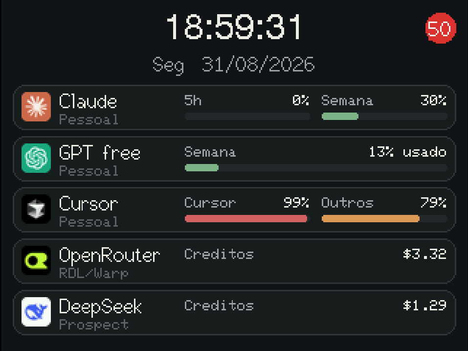
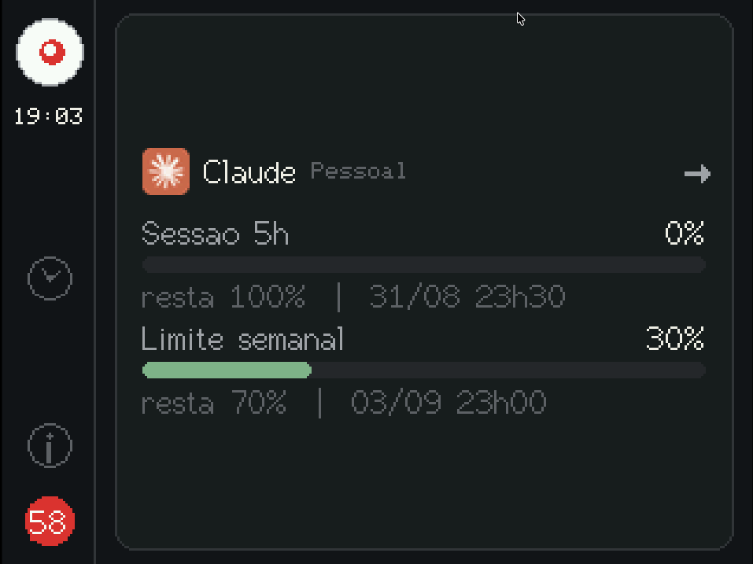
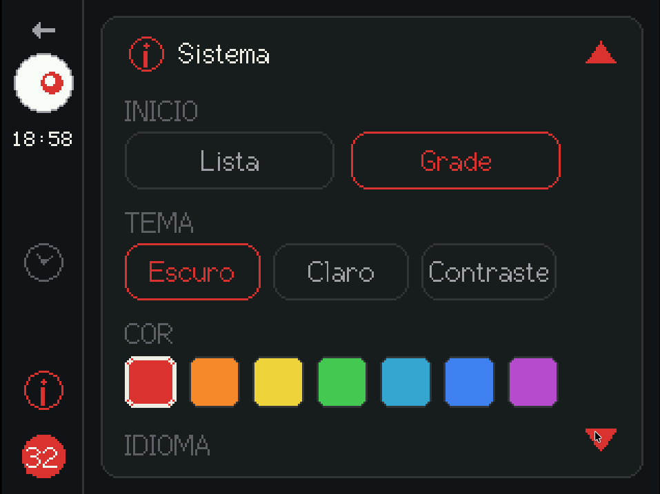
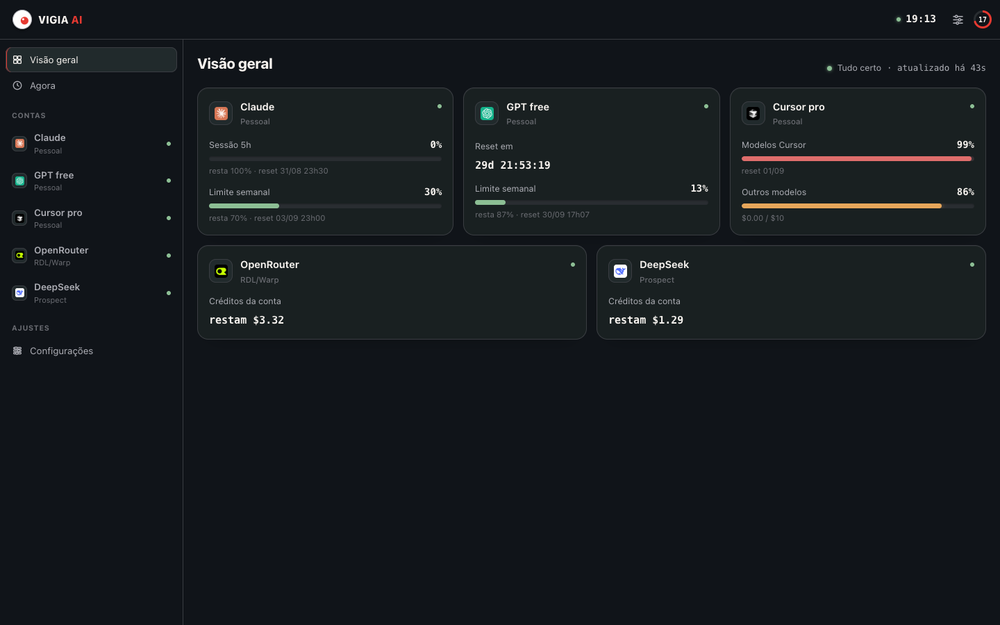
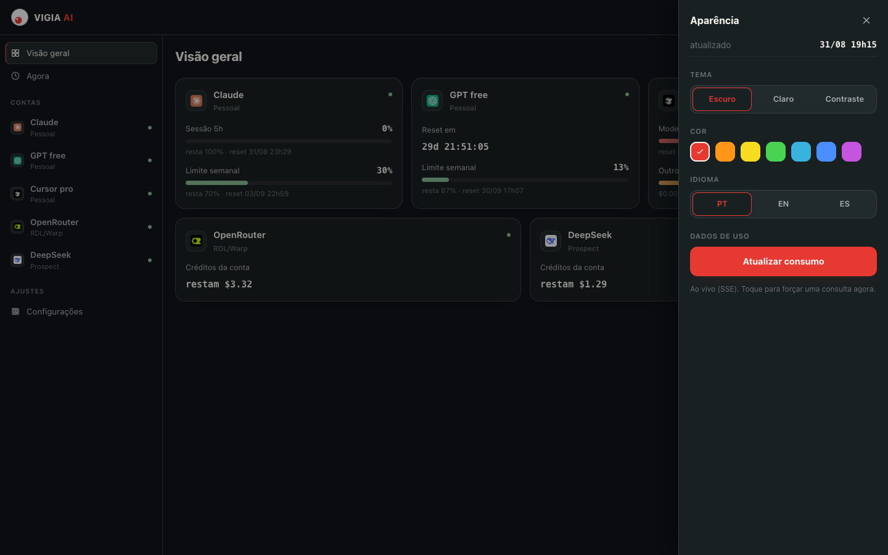
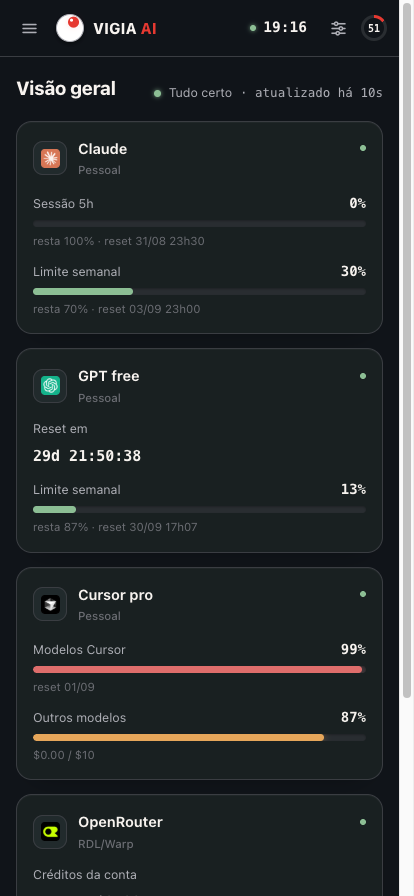

Open source · MIT
Painel de mesa para cotas de IA
sem nunca expor um token
Claude · GPT (ChatGPT/Codex) · Cursor · OpenRouter · DeepSeek — tudo num único mostrador, rodando em ESP32 + TFT 3,5" touch ou direto no navegador.

O problema
Cinco assinaturas, cinco abas, zero visibilidade
Eu uso Claude, ChatGPT/Codex, Cursor, OpenRouter e DeepSeek no mesmo dia de trabalho — cada um com sua própria cota, sua própria janela de reset e sua própria aba pra checar. Na prática, eu só descobria que tinha estourado o limite do Cursor quando o autocomplete parava de responder no meio de uma tarefa.
O Vigia AI tira essa pergunta da cabeça: um mostrador
sempre ligado na mesa, com o consumo de todas as contas atualizado sozinho. Sem abrir aba,
sem rodar curl,
sem lembrar de conferir.

Onde roda
Um gadget físico — mas o firmware é opcional
Do tamanho de um despertador na mesa, ou como página web num monitor extra e até no celular.
Físico
ESP32 Dev Module + TFT SPI 3,5" touch (XPT2046), tela sempre ligada na mesa.
Web
/display, mesmo layout, responsivo (desktop e mobile), tema e cor salvos no navegador.
Recursos
Tudo que um mostrador de cotas precisa ser
Claude, GPT (ChatGPT/Codex), Cursor, OpenRouter, DeepSeek.
Um único ciclo de consulta no coletor, distribuído por SSE — placa e abas não multiplicam chamadas.
Placa e navegador só veem percentuais, datas e ok: true/false.
Grade ou lista na Início, detalhe por conta, configurações direto na tela.
Escuro, claro e alto contraste, com PT / EN / ES.
Abre o painel de configuração de qualquer aparelho na mesma Wi-Fi.
Falha numa conta (ok: false) nunca derruba as outras.
Reusa o login que Claude Code, Codex ou Cursor já fizeram neste host.
Capturas de tela
Firmware e web, lado a lado






Claude · GPT · Cursor · OpenRouter · DeepSeek
GET /events (SSE) · GET /usage · GET /docs
escuta o stream
/display
réplica da placa
Como funciona
Um ciclo, todos os clientes
- Tokens ficam no computador (Keychain,
auth.json,state.vscdb) — o Vigia reusa o login que os apps oficiais já fizeram. - O coletor consulta as APIs uma vez por ciclo (padrão 60s) e empurra o mesmo JSON a todos os clientes SSE.
- O JSON na LAN tem percentuais e datas, nunca o Bearer.
- Falha de uma conta (
ok: false) não derruba as outras. HTTP 200.
Guia técnico completo em
docs/SETUP.md.
LAN only. Os endpoints de cota do Claude, do GPT e do Cursor não são API pública — são os mesmos que o CLI/IDE já usam neste computador. Não exponha a porta 8787 na internet. A placa nunca guarda tokens — só percentuais e datas.
Comece agora
Precisa de Python ≥ 3.11, Node 20+ e, para o firmware, PlatformIO Core
./dev upSobe o coletor e o mostrador web em http://127.0.0.1:8787/display.